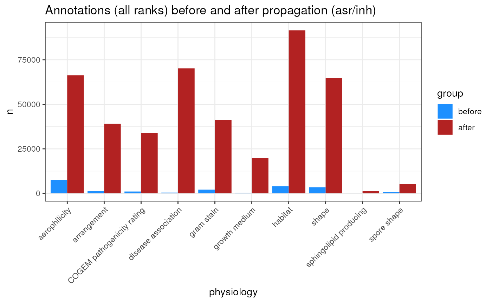
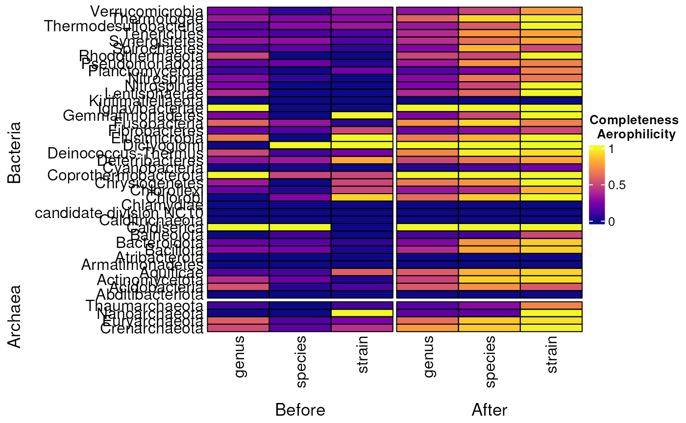

library(bugphyzzAnalyses)
library(bugphyzz)
library(taxPPro)
library(dplyr)
library(tidyr)
library(ComplexHeatmap)
library(purrr)
library(ggplot2)
exclude_phys <- c('antimicrobial resistance', 'isolation site')
phys <- physiologies(remove_false = TRUE) |>
keep(~ unique(.x$Attribute_type) == 'categorical') |>
{\(y) y[!names(y) %in% exclude_phys]}() |>
map(preSteps, tax.id.type = 'NCBI_ID', remove_false = TRUE)
before <- map_int(phys, nrow) |>
as.data.frame() |>
tibble::rownames_to_column(var = 'physiology') |>
mutate(group = 'before')
colnames(before)[2] <- 'n'
propagation <- vector('list', length(phys))
for (i in seq_along(propagation)) {
# message('>>> Propagating ', names(phys)[i], '. <<<')
# stat_time <- Sys.time()
names(propagation)[i] <- names(phys)[i]
propagation[[i]] <- propagate(phys[[i]], max.tax.level = 'genus')
# end_time <- Sys.time()
# message('>>> Done ', difftime(end_time, stat_time), '. <<<')
}
after <- map_int(propagation, nrow) |>
as.data.frame() |>
tibble::rownames_to_column(var = 'physiology') |>
mutate(group = 'after')
colnames(after)[2] <- 'n'
df <- bind_rows(before, after) |>
mutate(group = factor(group, c('before', 'after')))
p1 <- df |>
ggplot(aes(physiology, n)) +
geom_col(aes(fill = group), position = 'dodge') +
labs(title = 'Annotations (all ranks) before and after propagation (asr/inh)') +
theme_bw() +
scale_fill_manual(values = c('dodgerblue', 'firebrick')) +
theme(axis.text.x = element_text(angle = 45, hjust = 1))
p1
This is the reference information to filter both the ncbi references and the bugphyzz data (before and after propagation).
ncbi_taxonomy <- get_ncbi_taxonomy() |>
select(-Taxon_name, Parent_NCBI_ID, Rank)
#> Registered S3 method overwritten by 'httr':
#> method from
#> print.cache_info hoardr
#> Downloading NCBI taxdump. This might take a while.
#> Extracting files...
#> Importing ranked lineage...
#> Importing nodes...
#> Combining ranked lineages and nodes...
base_numbers <- get_ncbi_taxids('b') ## base numbers only
#> Extracting files...
#> Importing ranked lineage...
#> Importing nodes...
#> Combining ranked lineages and nodes...
all_numbers <- get_ncbi_taxids('all') ## all numbers
#> Extracting files...
#> Importing ranked lineage...
#> Importing nodes...
#> Combining ranked lineages and nodes...
## Let's get total by species with base numbers
ncbi_summary_sp <- base_numbers |>
filter(
## This filter is a double check. The get_ncbi_taxids function already
## makes this filter.
NCBI_ID %in% unique(ncbi_taxonomy$NCBI_ID),
Rank == 'species'
) |>
count(kingdom, phylum, name = 'n_ncbi_sp') |>
arrange(desc(kingdom), -n_ncbi_sp)
## Let's get totals by genus with base numbers
## Number of genus is the same anyway
ncbi_summary_gn <- base_numbers |>
filter(
## This filter is a double check. The get_ncbi_taxids function already
## makes this filter.
NCBI_ID %in% unique(ncbi_taxonomy$NCBI_ID),
Rank == 'genus'
) |>
count(kingdom, phylum, name = 'n_ncbi_gn') |>
arrange(desc(kingdom), -n_ncbi_gn)
## Let's get totals by strain with whole numbers?
ncbi_summary_st <- all_numbers |>
filter(
## This filter is a double check. The get_ncbi_taxids function already
## makes this filter.
NCBI_ID %in% unique(ncbi_taxonomy$NCBI_ID),
Rank == 'strain'
) |>
count(kingdom, phylum, name = 'n_ncbi_st') |>
arrange(desc(kingdom), -n_ncbi_st)
bp_summary_gn <- phys$aerophilicity |>
filter(
NCBI_ID %in% unique(ncbi_taxonomy$NCBI_ID),
Rank == 'genus'
) |>
left_join(ncbi_taxonomy, by = 'NCBI_ID') |>
select(kingdom, phylum, NCBI_ID) |>
distinct() |>
count(kingdom, phylum, name = 'n_bp_gn') |>
arrange(desc(kingdom), n_bp_gn)
bp_summary_sp <- phys$aerophilicity |>
filter(
NCBI_ID %in% unique(ncbi_taxonomy$NCBI_ID),
Rank == 'species'
) |>
left_join(ncbi_taxonomy, by = 'NCBI_ID') |>
select(kingdom, phylum, NCBI_ID) |>
distinct() |>
count(kingdom, phylum, name = 'n_bp_sp') |>
arrange(desc(kingdom), n_bp_sp)
bp_summary_st <- phys$aerophilicity |>
filter(
NCBI_ID %in% unique(ncbi_taxonomy$NCBI_ID),
Rank == 'strain'
) |>
left_join(ncbi_taxonomy, by = 'NCBI_ID') |>
select(kingdom, phylum, NCBI_ID) |>
distinct() |>
count(kingdom, phylum, name = 'n_bp_st') |>
arrange(desc(kingdom), n_bp_st)
completeness_gn <- left_join(
ncbi_summary_gn, bp_summary_gn, by = c('kingdom', 'phylum')
) |>
filter(!is.na(phylum), !grepl('(C|c)andidatus', phylum)) |>
mutate(
n_bp_gn = ifelse(is.na(n_bp_gn), 0, n_bp_gn),
completeness_gn = n_bp_gn / n_ncbi_gn
)
completeness_sp <- left_join(
ncbi_summary_sp, bp_summary_sp, by = c('kingdom', 'phylum')
) |>
filter(!is.na(phylum), !grepl('(C|c)andidatus', phylum)) |>
mutate(
n_bp_sp = ifelse(is.na(n_bp_sp), 0, n_bp_sp),
completeness_sp = n_bp_sp / n_ncbi_sp
)
completeness_st <- left_join(
ncbi_summary_st, bp_summary_st, by = c('kingdom', 'phylum')
) |>
filter(!is.na(phylum), !grepl('(C|c)andidatus', phylum)) |>
mutate(
n_bp_st = ifelse(is.na(n_bp_st), 0, n_bp_st),
completeness_st = n_bp_st / n_ncbi_st
)
completeness <- purrr::reduce(
list(completeness_gn, completeness_sp, completeness_st), left_join
) |>
mutate(group = paste0(kingdom, ' - ', phylum)) |>
select(group, starts_with('completeness')) |>
rename(
strain = completeness_st, species = completeness_sp,
genus = completeness_gn
) |>
tibble::column_to_rownames(var = 'group') |>
as.matrix()
completeness[is.na(completeness)] <- 0
prop_summary_gn <- propagation$aerophilicity |>
filter(
NCBI_ID %in% unique(ncbi_taxonomy$NCBI_ID),
Rank == 'genus'
) |>
left_join(ncbi_taxonomy, by = 'NCBI_ID') |>
select(kingdom, phylum, NCBI_ID) |>
distinct() |>
count(kingdom, phylum, name = 'n_prop_gn') |>
arrange(desc(kingdom), n_prop_gn)
prop_summary_sp <- propagation$aerophilicity |>
filter(
NCBI_ID %in% (ncbi_taxonomy$NCBI_ID),
Rank == 'species'
) |>
left_join(ncbi_taxonomy, by = 'NCBI_ID') |>
select(kingdom, phylum, NCBI_ID) |>
distinct() |>
count(kingdom, phylum, name = 'n_prop_sp') |>
arrange(desc(kingdom), n_prop_sp)
prop_summary_st <- propagation$aerophilicity |>
filter(
NCBI_ID %in% unique(ncbi_taxonomy$NCBI_ID),
Rank == 'strain'
) |>
left_join(ncbi_taxonomy, by = 'NCBI_ID') |>
select(kingdom, phylum, NCBI_ID) |>
distinct() |>
count(kingdom, phylum, name = 'n_prop_st') |>
arrange(desc(kingdom), n_prop_st)
prop_completeness_gn <- left_join(
ncbi_summary_gn, prop_summary_gn, by = c('kingdom', 'phylum')
) |>
filter(!is.na(phylum), !grepl('(C|c)andidatus', phylum)) |>
mutate(
n_prop_gn = ifelse(is.na(n_prop_gn), 0, n_prop_gn),
prop_completeness_gn = n_prop_gn / n_ncbi_gn
)
prop_completeness_sp <- left_join(
ncbi_summary_sp, prop_summary_sp, by = c('kingdom', 'phylum')
) |>
filter(!is.na(phylum), !grepl('(C|c)andidatus', phylum)) |>
mutate(
n_prop_sp = ifelse(is.na(n_prop_sp), 0, n_prop_sp),
prop_completeness_sp = n_prop_sp / n_ncbi_sp
)
prop_completeness_st <- left_join(
ncbi_summary_st, prop_summary_st, by = c('kingdom', 'phylum')
) |>
filter(!is.na(phylum), !grepl('(C|c)andidatus', phylum)) |>
mutate(
n_prop_st = ifelse(is.na(n_prop_st), 0, n_prop_st),
prop_completeness_st = n_prop_st / n_ncbi_st
)
prop_completeness <- purrr::reduce(
list(prop_completeness_gn, prop_completeness_sp, prop_completeness_st),
left_join
) |>
mutate(group = paste0(kingdom, ' - ', phylum)) |>
select(group, starts_with('prop_completeness')) |>
rename(
strain = prop_completeness_st,
species = prop_completeness_sp,
genus = prop_completeness_gn
) |>
tibble::column_to_rownames(var = 'group') |>
as.matrix()
prop_completeness[is.na(prop_completeness)] <- 0
row_names <- sort(
intersect(rownames(completeness), rownames(prop_completeness)),
decreasing = TRUE
)
colnames(completeness) <- paste0('before_', colnames(completeness))
colnames(prop_completeness) <- paste0('after_', colnames(prop_completeness))
# mat <- cbind(completeness[row_names,], prop_completeness[row_names,])
# mat[is.na(mat)] <- 0
rep1 <- sum(grepl('^Bacteria -', rownames(mat)))
rep2 <- sum(grepl('^Archaea -', rownames(mat)))
row_splits <- c(rep('Bacteria', rep1), rep('Archaea', rep2))
col_splits <- c(rep('Before', 3), rep('After', 3))
rownames(mat) <- sub('^(Archaea|Bacteria) - ', '', rownames(mat))
colnames(mat) <- sub('^(before|after)_', '', colnames(mat))
hp <- Heatmap(
matrix = mat,
show_column_dend = FALSE, show_row_dend = FALSE,
cluster_columns = FALSE, cluster_rows = FALSE,
name = 'Completeness
Aerophilicity',
row_names_side = 'left', column_title_side = 'bottom',
# row_title = 'Phylum', column_title = 'rank',
cell_fun = function(j, i, x, y, width, height, fill) {
grid.rect(x = x, y = y, width = width, height = height,
gp = gpar(col = "black", fill = NA))
},
col = viridis::viridis(1020, option = 'C'),
row_split = factor(row_splits, levels = c('Bacteria', 'Archaea')),
column_split = factor(col_splits, levels = c('Before', 'After'))
)
hp